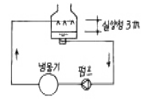
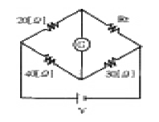

건축설비기사 (2005-03-06 기출문제)
1과목: 건축일반
1. 조적조 벽체에 관한 기술 중 틀린 것은?
- 벽의 길이는 20m 이하로 한다.
- 문꼴 위와 그 바로 위의 문꼴과의 수직거리는 60cm 이상으로 한다.
- 나비 180cm가 넘는 문꼴의 상부에는 철근콘크리트 인 방보를 설치한다.
- 내력벽으로 둘러싸인 부분의 바닥면적은 80m2 이하로 한다.
(정답률: 알수없음)

2. 다음 중 벽돌 쌓기에서 공간 쌓기를 하는 가장 중요한 목적으로 맞는 것은?
- 방청
- 방습
- 방화
- 내화
(정답률: 알수없음)
3. 계단에 대한 설명 중 옳지 않은 것은?
- 목조계단의 디딤널의 양옆에서 지지하는 경사진 재를 계단옆판이라고 한다.
- 난간두겁대는 손스침(handrail)이라고도 한다.
- 계단참은 꺽어돌아가는 계단의 중간에 둔 공간을 말하며 계단중정이라고도 한다.
- 계단멍에는 계단디딤판이 길고 비교적 얇은 널일 경우 계단 뒷면에 보강으로 사용된다.
(정답률: 알수없음)
4. 한식지붕에 사용되는 부재나 구조의 명칭이 아닌 것은?
- 보습장
- 동귀틀
- 단골막이
- 동연
(정답률: 60%)
5. 자연환기에 관한 다음 기술 중에서 틀린 것은?
- 실내에 바람이 없을 때 실내외의 온도차가 클수록 환기량도 커진다.
- 일반적으로 환기는 실내외 온도차에 의한 것보다 압력차에 의해 더 많이 발생한다.
- 하나의 창을 한쪽 벽에 배치하는 것이 절반 크기의 두개의 창을 마주보게 배치하는 것보다 환기에 효과적이다.
- 외부의 풍속이 클수록 환기량은 더 많아진다.
(정답률: 알수없음)
6. 표면결로의 방지방법으로 적당치 않은 것은?
- 비난방실 등으로의 수증기 침입을 억제한다.
- 환기로 실내절대습도를 저하시킨다.
- 실내에서 수증기 발생을 억제한다.
- 외벽의 단열강화로 실내측 표면온도를 저하시킨다.
(정답률: 80%)
7. 단층교사(單層校舍)의 장점이 아닌 것은?
- 학습활동을 실외에 연장할 수 있으며 재해시 피난상 유리하다.
- 치밀한 평면 계획을 할 수 있으며 부지의 이용률이 높다.
- 개개의 교실에서 밖으로 직접 출입할 수 있으므로 복도가 혼잡하지 않다.
- 내진, 내풍구조가 용이하다.
(정답률: 70%)
8. 1주간의 평균수업시간이 25시간인 학교에서, 영어교실은 5시간의 영어수업과 5시간의 국어수업에 이용된다. 이 경우 영어교실의 순수율은?
- 30%
- 40%
- 50%
- 60%
(정답률: 30%)
9. 상점의 적당한 방위에 대한 설명 중 잘못된 것은?
- 음식점 - 도로의 남측
- 양복점 - 직사광선이 들지 않는 위치
- 식료품점 - 서향
- 서점 - 도로의 남측이나 서측
(정답률: 50%)
10. 건축화조명에 대한 설명 중 옳지 않은 것은?
- 조명기구를 천장, 벽 등의 실 구성면 중에 장치하여 건축 내장의 일부와 같이 취급을 한 조명방식을 말한다.
- 조명기구로 인한 위화감을 없애고 실내의장에 통일성을 갖도록 하기 위해 사용한다.
- 광천장은 천장 전면에 루버를 갖고, 그 뒤쪽에 광원을 배치한 것이다.
- 벽면조명으로는 코니스 조명과 밸런스 조명이 있다.
(정답률: 알수없음)
11. 학교운영방식에 관한 설명 중 옳은 것은?
- 종합교실형은 일반교실이 각 학년에 하나씩 할당되고 그 외에 특별교실을 갖는다.
- 달톤형은 일반교실수와 특별교실수가 같은 운영방식이다.
- 교과교실형은 모든 교실이 특정한 교과를 위하여 만들어지고 일반교실은 없다.
- 초등학교 저학년에 가장 적합한 운영방식은 플래툰형으로 교실의 이용률이 높다.
(정답률: 50%)
12. 다음 중 실내조명설계의 순서에서 가장 먼저 이루어지는 것은?
- 조명기구의 배치결정
- 소요조도의 결정
- 조명방식의 결정
- 소요전등의 결정
(정답률: 75%)
13. 철근콘크리트구조의 철근 배근에 대한 설명 중 옳지 않은 것은?
- 단순보의 늑근은 중앙부분보다 단부에 더 많이 넣는다.
- 단순보의 주근은 중앙부에서 하부에 더 많이 넣는다.
- 띠철근(hoop)의 수직간격은 기둥 단면의 최대 치수 이하로 하여야 한다.
- 나선철근의 순간격은 25mm이상, 75mm이하이어야 한다.
(정답률: 55%)
14. 다음의 철골보에 대한 설명 중 옳지 않은 것은?
- 플랜지는 판보 또는 래티스보 등에서 보의 단면의 상하에 날개처럼 내민 부분을 말한다.
- 래티스보에 접합판(gusset plate)을 대서 접합한 보를 격자보라 한다.
- 판보에서는 웨브판의 좌굴을 방지하기 위하여 스티프너를 사용한다.
- 하이브리드거더는 다른 성질의 재질을 혼성하여 만든 일종의 조립보이다.
(정답률: 30%)
15. 아파트의 각 형식에 대한 설명 중 옳은 것은?
- 복층형(maisonette) 아파트는 프라이버시가 나쁘다.
- 집중형은 대지이용도가 높고 채광 및 통풍이 용이하다.
- 편복도형은 공용복도에 있어서는 프라이버시가 침해되기 쉽다.
- 계단실형은 프라이버시가 좋으나 출입 및 통행이 용이하지 않다.
(정답률: 알수없음)
16. 나무구조에서 두 재가 직각 또는 경사로 물려 짜이는 것 또는 그 자리를 나타내는 용어는?
- 이음
- 맞춤
- 쪽매
- 장척
(정답률: 40%)
17. 주택의 부지 선정시 고려해야 할 점과 가장 관계가 먼 것은?
- 봄, 가을의 풍향과 풍속
- 기존도시 설비(급배수, 교통기관, 전기 등)의 상황
- 일조와 대지의 방위
- 지형과 지반 상태
(정답률: 80%)
18. 사무소 설비계획에 관한 기술 중 옳은 것은?
- 우편물 수취함은 각층에 배치한다.
- 동일층에서 화장실은 되도록 분산시키도록 한다.
- 지하층 식당에는 채광, 환기를 위하여 스모크타워(smoke tower)를 둔다.
- 엘리베이터는 출입구 문에 바싹 접근해 배치하지 않는다.
(정답률: 60%)
19. 돌구조에 관한 기술 중 틀린 것은?
- 가공 및 시공이 용이하며 공사기간이 짧다.
- 조적식 구조에 속한다.
- 불연성으로 압축에 강하다.
- 실내 유효면적이 줄어드는 단점이 있다.
(정답률: 알수없음)
20. 상점계획에서 대면판매의 특징에 대한 설명 중 옳지 않은 것은?
- 상품에 대하여 설명하기가 편리하다.
- 판내원이 정위치를 정하기가 용이하다.
- 상품의 충동적 구매와 선택이 용이하다.
- 쇼케이스가 많아지면 상점의 분위기가 부드럽지 않다.
(정답률: 29%)
2과목: 위생설비
21. 오수처리의 방법으로 생물화학적방법에는 생물막법과 활성오니방법이 있는데, 다음 중 활성오니방법에 속하는 것은?
- 회전원판접촉방식
- 접촉산화방식
- 살수여상방식
- 장기간폭기방식
(정답률: 알수없음)
22. 펌프에 관한 설명 중 옳은 것은?
- 동일펌프로 동일 송수계통에 양수하고 있는 경우 펌프의 회전수가 2배로 되면 양정은 4배로 된다.
- 비속도가 작은 펌프는 양수량의 변화에 따라 양정의 변화도 크다.
- 특성이 같은 펌프를 2대 병렬 운전하면 양수량과 양정은 1대일 경우의 2배로 된다.
- 특성이 같은 펌프를 2대 직렬 운전하면 양수량은 1대일 경우의 2배로 된다.
(정답률: 40%)
23. 세정밸브식 대변기에서 토수된 물이나 이미 사용된 물이 역사이폰 작용에 의해 상수계통으로 역류하는 것을 방지하는 기구는?
- 버큠 브레이커
- 슬리브
- 스트레이너
- 볼탭
(정답률: 알수없음)
24. 지붕을 관통하는 통기관은 지붕으로부터 최소 얼마 이상 입상하여 대기 중에 개구(開口)하는가?
- 50mm
- 75mm
- 100mm
- 150mm
(정답률: 34%)
25. 배수 배관에서 청소구를 원칙적으로 설치하여야 하는 곳이 아닌 것은?
- 배수수평주관의 기점
- 배수수직관의 최상부
- 배수수평주관과 옥외배수관의 접속장소와 가까운 곳
- 배수수평지관의 기점
(정답률: 80%)
26. 급탕방식 중 중앙식 급탕법에 대한 설명으로 옳은 것은?
- 배관 및 기기로부터의 열손실이 적다.
- 급탕개소마다 가열기의 설치 스페이스가 필요하다.
- 시공 후, 기구 증설에 따른 배관변경공사를 하기 어렵다.
- 급탕배관의 길이가 짧고 탕을 순환할 필요가 없는 소규모 급탕설비로서 이용된다.
(정답률: 알수없음)
27. 수도직결방식으로 높이 10ｍ에 설치된 세척밸브식 대변기에 급수를 할 때 필요한 수도 본관의 최저압력은? (단, 배관내의 마찰손실은 4mAq임)
- 0.7㎏/㎝2
- 1.0㎏/㎝2
- 1.4㎏/㎝2
- 2.1㎏/㎝2
(정답률: 알수없음)
28. 다음 트랩에 관한 설명 중 틀린 것은?
- 트랩은 배수계통에 설치하여 하수가스, 벌레 등이 실내로 유입하는 것을 방지한다.
- 트랩의 봉수 깊이는 최소 50mm 최대 100mm로 한다.
- 오물이 트랩에 체류하지 않도록 구조는 간단하고 내표면은 평활한 것이 좋다.
- 드럼트랩은 관트랩의 일종으로 바닥배수를 받는 배수구와 트랩이 하나로 되어 있는 트랩이다.
(정답률: 70%)
29. 다음 중 간접배수로 해야 하는 기구가 아닌 것은?
- 냉장고
- 세탁기
- 식기세척기
- 세면기
(정답률: 67%)
30. 급수설비에 관한 설명 중 옳은 것은?
- 하향급수배관방식은 수도직결 급수방식인 경우에 가장 많이 사용되며 급수관의 수평주관은 1/250 이상의 올림구배로 한다.
- 고가수조의 용량은 양수펌프의 양수량과 상호관계가 있으며, 고가수조의 설치조건에 따라 좌우되는 경우가 많다.
- 급수의 오염을 방지하기 위하여 크로스 커넥션(cross connection) 배관을 한다.
- 급수방식 중 압력수조방식은 정전시에도 단수가 되지 않으며 급수압력이 일정한 장점이 있다.
(정답률: 50%)
31. 일반 배수관의 배관에 대한 설명 중 옳은 것은?
- 배수수직관의 45˚를 넘는 오프셋부에 배수수평지관을 연결할 때는 오프셋부의 상부 또는 하부의 300mm 이내에서 접속해서는 안된다.
- 배수관 이음쇠는 관내면이 매끄럽고, 또한 수평관에는 구배를 둘 수 있는 구조로 되어 있어야 한다.
- 배수수직관의 관경은 최상부보다 최하부가 더 두껍게 한다.
- 배수관이 30˚이상의 각도로 방향을 바꾸는 곳에는 원칙적으로 청소구를 설치한다.
(정답률: 40%)
32. 급탕배관에 관한 설명 중 옳지 않은 것은?
- 상향배관인 경우 급탕관은 하향구배, 반탕관은 상향구배로 한다.
- 배관시공시 굴곡배관을 해야할 경우에는 공기빼기 밸브를 설치한다.
- 관의 신축을 고려하여 건물의 벽관통부분의 배관에는 슬리브를 끼운다.
- 중앙식 급탕설비는 원칙적으로 강제순환방식으로 한다.
(정답률: 82%)
33. 급탕인원이 150명인 아파트의 1일당 예상급탕량은 얼마인가? (단, 1인 1일당 급탕량은 120ℓ/ｃ/ｄ로 한다)
- 12,000ℓ/ｄ
- 15,000ℓ/ｄ
- 18,000ℓ/ｄ
- 20,000ℓ/ｄ
(정답률: 알수없음)
34. 다음 중 수질과 관련된 용어와 가장 관계가 먼 것은?
- PH(수소이온농도)
- SS(부유물질)
- DO(용존산소)
- WI(웨버지수)
(정답률: 64%)
35. 다음 중 건축설비분야에서 급수, 급탕, 배수 등에 주로 사용되는 터보형 펌프는?
- 왕복식 펌프
- 원심식 펌프
- 축류 펌프
- 마찰 펌프
(정답률: 알수없음)
36. 양수펌프의 흡수면으로부터 토출수면까지의 실제높이는 20m이고, 관로의 전손실수두는 실양정의 20%로 하며, 흡입관과 토출관의 관경이 같은 경우 펌프의 전양정(m)은?
- 20m
- 22m
- 24m
- 20.2m
(정답률: 알수없음)
37. LPG 및 LNG에 대한 설명으로 옳지 않은 것은?
- LNG는 천연적으로 산출하는 천연가스를 -162℃까지 냉각 액화한 것을 말한다.
- LPG는 주위에서 증발잠열을 빼앗아 기화한다.
- LPG는 일산화탄소를 함유하지 않기 때문에 생가스에 의한 중독의 위험성은 없으나 질식 또는 불완전 연소에 의한 일산화탄소 중독의 가능성은 있다.
- LNG의 비중은 공기의 비중보다 크므로 누설되었을 때 하부에 체류하기 쉽다.
(정답률: 75%)
38. 물분무 소화설비에 대한 설명 중 옳지 않은 것은?
- 가솔린 등 인화점이 낮은 가연성 액체의 소화에 주로 사용되며 수용성의 알콜화재에는 사용할 수 없다.
- 분무된 물이 화재의 열에 의하여 수증기로 되면 체적이 팽창하여 연소면을 덮어 산소를 차단하는 작용도 한다.
- 헤드에서 방사시킨 물입자의 크기, 밀도, 유효사정, 살수각도, 살수유효반경에 따라 소화성능이 다르다.
- 미세한 물방울이기 때문에 열을 흡수하기 쉽고 분포가 균일하기 때문에 냉각효율도 좋다.
(정답률: 알수없음)
39. 다음 중 급수ㆍ급탕배관의 검사 및 시험과 가장 관계가 먼것은?
- 연기시험
- 만수시험
- 통수시험
- 수압시험
(정답률: 알수없음)
40. 옥내소화전설비 설치기준으로 옳은 것은?
- 방수구는 바닥으로부터의 높이가 1.5m 이하가 되도록한다.
- 소화전의 노즐선단에서의 방수압력은 2.1㎏/㎝2 이상이어야 한다.
- 소화전의 방수량은 300ℓ/분 이상이다.
- 소화전의 주배관중 수직배관의 관경은 20㎜ 이상으로 하여야 한다.
(정답률: 알수없음)
3과목: 공기조화설비
41. 덕트내 정압을 측정하는 기기는?
- 서모스탯
- 사이폰관
- 벤츄리관
- 마노미터
(정답률: 20%)
42. 다음 그림에 나타난 냉각수 배관계통의 냉각수 펌프양정(mAq)은? (단, 냉각수 배관 전길이는 200m, 마찰저항은 40㎜Aq/m, 배관계 국부저항은 배관저항의 30%로 하고 냉동기 응축기 저항 8mAq, 냉각탑의 살수압력은 0.4㎏/㎝2으로 한다.)

- 19.1
- 21.7
- 25.4
- 28.3
(정답률: 알수없음)
43. 다음 중 의복의 열절연성을 나타내는 단위로 올바른 것은?
- clo
- met
- ppm
- vol%
(정답률: 알수없음)
44. 휀(Fan)의 풍량제어 방법이 아닌 것은?
- 휀 벨트(Belt)의 조정
- 휀 모터의 변속운전
- 휀의 흡입측 댐퍼조절
- 휀의 인렛 베인(Inlet Vane)조정
(정답률: 알수없음)
45. 냉열원 부하 중 실내취득열량이 아닌 것은?
- 벽체로부터의 취득열량
- 인체발생열량
- 기구발생열량
- 덕트로부터의 취득열량
(정답률: 62%)
46. 공조기에 있는 냉각기 코일이 건코일일 때 냉각열량 qc[kcal/h]을 구하시오. (단, 냉각기의 입구 및 출구에서 공기의 온도는 각각 30℃, 13℃이며 통과되는 공기량은 6,000kg/h이다)
- 22,440kcal/h
- 24,480kcal/h
- 29,580kcal/h
- 122,400kcal/h
(정답률: 20%)
47. 위치수두 10mAq, 압력 3kg/cm2, 속도 2m/s인 관속을 흐르는 물(γ=1000kg/m3)의 전수두는?
- 13.0m
- 13.2m
- 14.1m
- 40.2m
(정답률: 0%)
48. 염화리튬(LiCl)을 사용하는 감습장치가 냉각 감습식보다 유리한 조건이 아닌 것은?
- 공조되고 있는 실내의 건구온도가 0℃ 이상이고 노점온도가 0℃ 이하일 때
- 공조기 출구의 노점이 5℃ 이하일 때
- 실내 잠열부하의 변동이 클 때 실내온도를 일정하게 유지할 경우
- 온도가 32℃ 이상 또는 10℃ 이하에서 저습도로 할 때
(정답률: 20%)
49. 냉각탑에 관한 다음 기술중 가장 적당한 것은?
- 보급수량은 냉각수 순환수량의 1~3% 정도를 고려하면 좋다.
- 기계통풍식의 대형냉각탑으로 부터 발생하는 소음은 무시할 정도로 적다.
- 동일 냉동용량일 경우 흡수식 냉동기의 냉각수량은 터보 냉동기의 냉각수량보다 적다.
- 냉각수는 외기의 건구온도보다 낮게 냉각시킬 수는 없다.
(정답률: 34%)
50. 주방, 공장, 실험실에서와 같이 오염물질의 확산 및 방지를 가능한 극소화시키기 위한 환기방식은?
- 희석환기
- 전체환기
- 집중환기
- 국소환기
(정답률: 알수없음)
51. 워터햄머를 방지하기 위한 방안으로 옳지 않은 것은?
- 관내 유속을 느리게 한다.
- 공기실을 설치한다.
- 펌프에 플라이 휠을 설치한다.
- 관내에서 흐르는 물의 관성력을 크게 한다.
(정답률: 알수없음)
52. 온수배관에 관한 기술 중 틀린 것은?
- 배관의 신축을 고려한다.
- 배관재료는 내식성을 고려한다.
- 온수배관에는 공기가 고이지 않도록 구배를 준다.
- 온수보일러의 팽창관에는 게이트 밸브를 설치한다.
(정답률: 64%)
53. 에너지 절약적인 운전관리에 해당하지 않는 것은?
- CO2검출기 등을 설치하여 과도한 외기 도입을 억제한다.
- 공급수, 송풍 공기온도의 설정변경을 한다.
- 열원기기의 대수제어를 적극적으로 실행한다.
- 수동제어에 의하여 조정한다.
(정답률: 알수없음)
54. 습공기의 상태를 설명한 내용 중 가장 적당한 것은?
- 습공기중의 상대습도는 일반적으로 밤보다는 한낮이 높다.
- 비오는 날 공기중의 상대습도는 그다지 높지 않다.
- 상대습도는 절대습도에 비례한다.
- 상대습도가 높을수록 결로의 위험이 크다.
(정답률: 알수없음)
55. 환기방식중 연소용 공기가 필요한 경우 적합한 방식은?
- 압입, 흡출 병용방식
- 압입환기방식
- 흡출환기방식
- 자연환기방식
(정답률: 알수없음)
56. 대형냉동기의 경우 응축기와 압축기의 냉매가 물과 열교환 하는 물-물 방식을 채택하고 있다. 공기와 열교환하는 경우와 비교할 때 장점이 아닌 것은?
- AHU, 냉각탑, 2차냉매 등이 필요 없기 때문에 공조기로 사용될 때 장치가 간단하다.
- 공기에 비해 물의 비열이 크기 때문에 순환량을 적게 하여도 된다.
- 공기에 비해 열전달이 잘되기 때문에 열전달장치의 크기가 작아도 된다.
- 열교환기 입구의 물의 온도에 있어 급격한 변화가 적기 때문에 안정된 성능으로 운전이 가능하다.
(정답률: 알수없음)
57. 증기난방방식의 특징을 기술한 내용 중 옳지 않은 것은?
- 온수난방에 비하여 방열기의 크기를 작게할 수 있다.
- 극장, 영화관 등 천장고가 높은 건물에 적합하다.
- 신속히 난방할 수 있다.
- 온수난방에 비하여 쾌감도가 떨어진다.
(정답률: 알수없음)
58. 빙축열 시스템의 제빙방식에 의한 분류에서 정적 제빙형이 아닌 것은?
- 관외착빙형
- 완전동결형
- 빙박리형
- 캡슐형
(정답률: 알수없음)
59. 다음 중 온수난방설비와 관계없는 것은?
- 팽창탱크
- 공기빼기밸브
- 하아트포드 접속법
- 신축이음
(정답률: 알수없음)
60. 공기조화설비에서 부하계산의 목적이 아닌 것은?
- 공조시스템의 결정과 공조장치의 용량을 결정하기 위해 필요하다.
- 실내에 송풍하는 공기의 양과 송풍온도를 결정하기 위해 필요하다.
- 배관, 덕트 및 샤프트 등의 배치를 위한 기초자료로서 필요하다.
- 건물이 완성되었을 때 임대료를 계산하는 절대적인 기준으로서 필요하다.
(정답률: 50%)
4과목: 소방 및 전기설비
61. 발전기실의 위치 선정시 고려해야 할 사항과 가장 관계가 먼 것은?
- 실내 환기를 충분히 행할 수 있을 것
- 변전실에 가깝고, 침수의 우려가 없을 것
- 배기 배출구에 가급적 멀리 위치할 것
- 기기의 반입ㆍ반출 및 운전 보수면에서 편리할 것
(정답률: 알수없음)
62. 1.5[V] 건전지 2개가 직렬로 손전등에 사용되었다. 0.5[A]의 전류가 흐른다면 전구의 저항[R]은?
- 0.75[Ω]
- 3[Ω]
- 1.5[Ω]
- 6[Ω]
(정답률: 알수없음)
63. 다음 중 에너지절약제어가 아닌 것은?
- 전력수요제어
- 역률개선제어
- 외기도입제어
- 디지탈제어
(정답률: 60%)
64. 배전설비에 교류를 채택하는 이유가 아닌 것은?
- 송배전계통의 각지역에서 최적의 전압을 변압기로서 공급할 수 있다.
- 교류발전기는 구조가 간단하고 견고하며 전기발생이 용이하다.
- 직류방식에 비해 승압 및 절연이 단순하여 건설비가 싸다.
- 계통연계가 용이하고, 구성이 비교적 자유롭다.
(정답률: 40%)
65. 절연 저항 측정에 대해 바르게 설명한 것은?
- 기기와 대지간 절연 저항을 측정 할 때에는 오실로스코프(oscilloscope)를 사용한다.
- 절연저항을 측정할 때에는 메거(megger)를 사용한다.
- 절연 저항 측정값은 대지와 기기간에 저항값이 작아야 누전의 위험성이 없다.
- 절연 저항 측정시에는 기기를 반드시 접지시키고 측정하여야 한다.
(정답률: 39%)
66. 접지공사에 관한 설명 중 옳지 않은 것은?
- 건조한 목재바닥에 저압의 전동기를 설치할 때 접지공사를 절대 생략하여서는 안된다.
- 특별고압계기용 변성기의 2차측 전로에 실시하는 접지공사의 접지저항값은 10Ω이하이다.
- 400V이하의 저압용 기계기구의 철대 및 금속제 외함에는 제3종 접지공사를 실시한다.
- 감전의 방지, 기기의 손상 방지, 보호계전기의 동작 확보를 위해 접지공사를 실시한다.
(정답률: 55%)
67. 계기용 변압기의 2차측 정격전압[V]과 계기용 변류기의 2차측 정격전류[A] 값은 각각 얼마인가?
- 200V, 10A
- 200V, 5A
- 110V, 10A
- 110V, 5A
(정답률: 알수없음)
68. 각종 수송설비에 대한 설명 중 옳지 않은 것은?
- 이동보도는 수평으로부터 10˚ 이내의 경사로 되어 있으며, 승객을 수평방향으로 수송하는데 이용되는 설비이다.
- 전동 덤웨이터는 리프트라고도 하며 사람은 타지 않고 물품만을 승강시키는 장치이다.
- 건물의 용도에 맞는 엘리베이터를 설계하기 위하여 구하여야 할 사항으로는 정원, 평균 일주시간, 설비 대수 등을 들 수 있다.
- 에스컬레이터의 정격속도는 하강방향을 고려하여 60[m/min] 정도가 좋다.
(정답률: 알수없음)
69. 방범설비에 사용되는 단말검출기 중에서 도플러(Doppler) 효과를 이용하여 침입자를 검출하는 것은?
- 초음파 검출기
- 적외선식 검출기
- 리미터
- 진동 검출기
(정답률: 19%)
70. 엘리베이터에 관한 기술로서 옳지 않은 것은?
- 홀 도어는 각 층의 복도와 승강로를 차단하여 승객의 안전을 도모하기 위한 것이다.
- 권상기의 부하를 줄이기 위하여 카의 반대쪽 로프에 장치하는 것은 완충기이다.
- 리미트 스위치는 카가 최상층에서 정상 운행위치를 벗어나 그 이상으로 운행하는 것을 방지하는 안전장치이다.
- 전동기측의 회전동력을 로프에 전달하는 기기를 권상기라고 한다.
(정답률: 46%)
71. 간선의 부설방식에 대한 다음의 설명 중 틀린 것은?
- 금속덕트 내에 부설하는 전선 및 케이블의 절연 피복을 포함한 단면적의 총합은 덕트 단면적의 20% 이하가 되도록 한다.
- 케이블 래크는 덮개가 없이 노출되어 있으며 방열효과와 시공성이 좋아, 절연전선 및 케이블의 부설에 많이 쓰인다.
- 금속 덕트 배선은 옥내의 건조한 곳으로 노출된 장소나 점검할 수 있는 은폐된 장소에 시설한다.
- 금속관의 두께는 콘크리트 내에 묻어서 사용할 경우 1.2mm 이상, 그 외의 경우는 1mm 이상이어야 한다.
(정답률: 알수없음)
72. 정전용량이 같은 콘덴서 10개를 병렬접속할 때의 합성정전용량은 직렬접속할 때의 합성정전용량의 몇 배가 되는가?
- 70배
- 100배
- 130배
- 200배
(정답률: 50%)
73. 다음의 휘트스톤(Wheatstone) 브릿지 회로가 평형상태일때 Rt의 저항값[R]은?

- 5[Ω]
- 15[Ω]
- 53[Ω]
- 60[Ω]
(정답률: 알수없음)
74. 다음의 자동제어 방식 중 각종 연산제어 및 에너지 절약제어가 가능하며 정밀도 및 신뢰도가 가장 높은 것은?
- DDC 방식
- 전기식
- 전자식
- 공기식
(정답률: 77%)
75. 시퀀스제어를 적용하기에 적합하지 않은 것은?
- 부스터 펌프의 압력 제어
- 팬의 기동/정지
- 엘리베이터의 기동/정지
- 공기조화기의 경보시스템
(정답률: 알수없음)
76. 교류 전력의 유효전력표시로 옳은 것은?
- P = VI COSθ [W]
- P = VI SINθ [Var]
- P = VI [VA]
- P = RT [W]
(정답률: 알수없음)
77. 자동화재탐지설비의 감지기 중 열감지기가 아닌 것은?
- 광전식 감지기
- 차동식 감지기
- 정온식 감지기
- 보상식 감지기
(정답률: 20%)
78. 전자 1개가 가지는 전기량의 절대값[C]은?
- 9.02 × 10-27[C]
- 1.602 × 1019[C]
- 1.602 × 10-19[C]
- 9.02 × 1027[C]
(정답률: 알수없음)
79. 내부저항 r인 전지 N개를 병렬 연결할때 최대 전력을 수전 받을 수 있는 부하 저항[R]은?
- r / N
- Nr
- r
- N2r
(정답률: 50%)
80. 다음 중 교류전동기가 아닌 것은?
- 권선형 유도 전동기
- 3상 동기 전동기
- 셰이딩 코일형 유도 전동기
- 복권 전동기
(정답률: 10%)
5과목: 건축설비관계법규
81. 다음 중 기술관리인을 두어야 하는 오수·분뇨 처리시설에 해당하지 않는 것은?
- 1일 처리용량이 300제곱미터인 오수처리시설
- 1일 처리용량이 500제곱미터인 오수처리시설
- 처리대상인원이 1,500인 인 단독정화조
- 분뇨처리시설
(정답률: 알수없음)
82. 거실의 채광 및 환기에 관한 규정 중 옳지 않은 것은 ?
- 단독주택의 거실에 설치하는 환기용 창문은 거실바닥면적의 1/20 이상 설치하여야 한다.
- 수시로 개방할 수 있는 미닫이로 구획된 2개의 거실은 채광 및 환기를 위한 면적산정시 1개의 거실로 본다.
- 기계환기장치를 설치한 경우에도 설치하지 않은 경우와 같이 환기용 창문을 설치하여야 한다.
- 학교 교실의 채광용 창문은 거실바닥면적의 1/10 이상 설치하여야 한다.
(정답률: 19%)
83. 각 층별 바닥면적이 3,000m2이고 그 중 거실면적이 2,200m2인 10층의 병원건축물에 필요한 승용승강기는 16인승을 기준으로 최소 몇 대가 필요한가 ?
- 3대
- 4대
- 5대
- 6대
(정답률: 알수없음)
84. 소방시설설치유지및안전관리에 관한 법령에서 위생등관련 시설에 포함되지 않는 것은?
- 분뇨 및 폐기물처리시설
- 전염병원
- 고물상
- 폐기물재활용시설
(정답률: 10%)
85. 에너지이용합리화법상 에너지 기술개발을 위한 사업에 투자 또는 출원을 권고할 수 있는 에너지와 관련된 사업을 영위하는 자에 해당되지 않는 것은?
- 에너지공급자
- 에너지사용기자재의 제조업자
- 에너지관련 기술용역업자
- 에너지개발업자
(정답률: 알수없음)
86. 건축물에 설치하는 피뢰설비의 구조에 관한 기술 중 틀린것은?
- 돌침 또는 피뢰도체의 보호각은 위험물 저장 및 처리시설인 경우 45°로 해야 한다.
- 돌침은 건축물의 맨 윗부분으로부터 25㎝이상 돌출시켜 설치해야 한다.
- 피뢰도체 및 피뢰도선은 가연성 물질과는 30㎝이상의 거리를 두어야 한다.
- 인하도선 사이의 간격은 50m이하로 하고, 각 인하도선당 1개 이상의 접지극을 지하 3m이상에 매설해야 한다.
(정답률: 34%)
87. 소화설비 경보설비·피난설비·소화용수설비 그 밖에 소화활동설비로서 대통령령이 정하는 것을 무엇이라 하는가?
- 특정소방대상물
- 소방용기구
- 소방시설
- 소방용기계
(정답률: 62%)
88. 비상용 승강기의 승강장 구조에 관한 설명으로 옳지 않은 것은?
- 승강장의 창문·출입구 기타 개구부를 제외한 부분은 당해 건축물의 다른 부분과 내화구조의 바닥 및 벽으로 구획할 것
- 벽 및 반자가 실내에 접하는 부분의 마감재료는 난연재료로 할 것
- 승강장의 바닥면적은 비상용 승강기 1대에 대하여 6m2 이상으로 할 것
- 승강장은 피난층을 제외한 각층의 내부와 연결될 수 있도록 하되, 그 출입구에는 갑종방화문을 설치할 것
(정답률: 알수없음)
89. 에너지관리대상자는 연료 및 열과 전력의 연간 사용량의 합계가 얼마 이상인 경우 에너지사용신고를 하는가?
- 5백 티.오.이
- 1천 티.오.이
- 1천5백 티.오.이
- 2천 티.오.이
(정답률: 9%)
90. 다음 중 가설건축물의 기준으로 옳지 않은 것은?
- 철근콘크리트조 또는 철골철근콘크리트조가 아닐 것
- 존치기간은 3년 이내일 것
- 3층 이하일 것
- 전기·수도·가스 등 새로운 간선공급설비의 설치를 요할 것
(정답률: 50%)
91. 문화 및 집회시설중 공연장의 개별관람석 바닥면적이 300m2이상일 때의 법적 기준으로 옳지 않은 것은?
- 영화관의 관람석으로부터 바깥쪽으로의 출구로 쓰이는 문은 안여닫이로 하여서는 아니된다.
- 관람석별로 출구는 2개소 이상 설치해야 한다.
- 각 출구의 유효너비는 1.6m 이상으로 해야 한다.
- 개별 관람석 출구의 유효너비의 합계는 개별 관람석 바닥면적 100m2마다 0.6ｍ의 비율로 산정한 너비 이상으로 하여야 한다.
(정답률: 60%)
92. 분뇨를 재활용의 목적으로 하는 경우 1일 처리용량이 몇 kg 이상인 경우에 시장·군수·구청장에게 신고하여야 하는가?
- 5 kg
- 10 kg
- 15 kg
- 20 kg
(정답률: 40%)
93. 구조안전의 확인시 지진에 대한 안전여부를 확인해야 하는 건축물로서 옳은 것은?
- 연면적이 5,000m2인 건축물
- 기둥과 기둥사이의 거리가 10m인 건축물
- 층수가 6층인 건축물
- 높이가 13m인 건축물
(정답률: 22%)
94. 소방시설설치유지및안전관리에관한법령에 의한 비상구의 정의에서 출입구 가로, 세로의 크기로 옳은 것은?
- 75센티미터 이상, 150센티미터 이상
- 80센티미터 이상, 160센티미터 이상
- 90센티미터 이상, 180센티미터 이상
- 100센티미터 이상, 200센티미터 이상
(정답률: 20%)
95. 다음 건축물중 간막이벽을 설치하지 않아도 되는 것은?
- 기숙사의 침실
- 의료시설의 병실
- 학교의 교실
- 오피스텔의 거실
(정답률: 알수없음)
96. 에너지기술개발계획은 몇 년 이상을 계획기간으로 하는가?
- 3년
- 5년
- 10년
- 15년
(정답률: 알수없음)
97. 건축물의 7층에 설치하는 직통계단에서 그중 1개소 이상을 특별피난계단으로 설치하여야 하는 당해 층의 용도로 옳은 것은?
- 판매 및 영업시설중 도매시장
- 숙박시설중 호텔
- 위락시설중 무도장
- 업무시설중 사무소
(정답률: 알수없음)
98. 지방건축위원회에서 구조·안전 피난 및 소방에 관한 사항을 심의하는 용도가 아닌 것은?
- 판매 및 영업시설
- 종합병원
- 관광휴게시설
- 관광숙박시설
(정답률: 34%)
99. 다음의 행위 중 대수선에 해당하지 않는 것은?
- 보와 기둥을 각각 3개 해체하여 수선 또는 변경하는 것
- 지붕틀을 3개이상 해체하여 수선 또는 변경하는 것
- 미관지구 안에서 건축물의 외부형태 또는 담장을 변경하는 것
- 내력벽의 벽면적을 20제곱미터이상 해체하여 수선 또는 변경하는 것
(정답률: 알수없음)
100. 숙박시설의 욕실은 그 바닥으로부터 높이 몇 m 까지 안벽의 마감을 내수재료로 하여야 하는가?
- 0.5m
- 1.0m
- 1.5m
- 2.0m
(정답률: 알수없음)